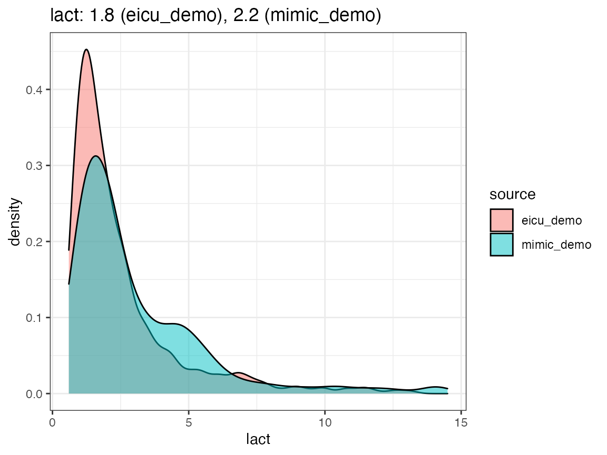
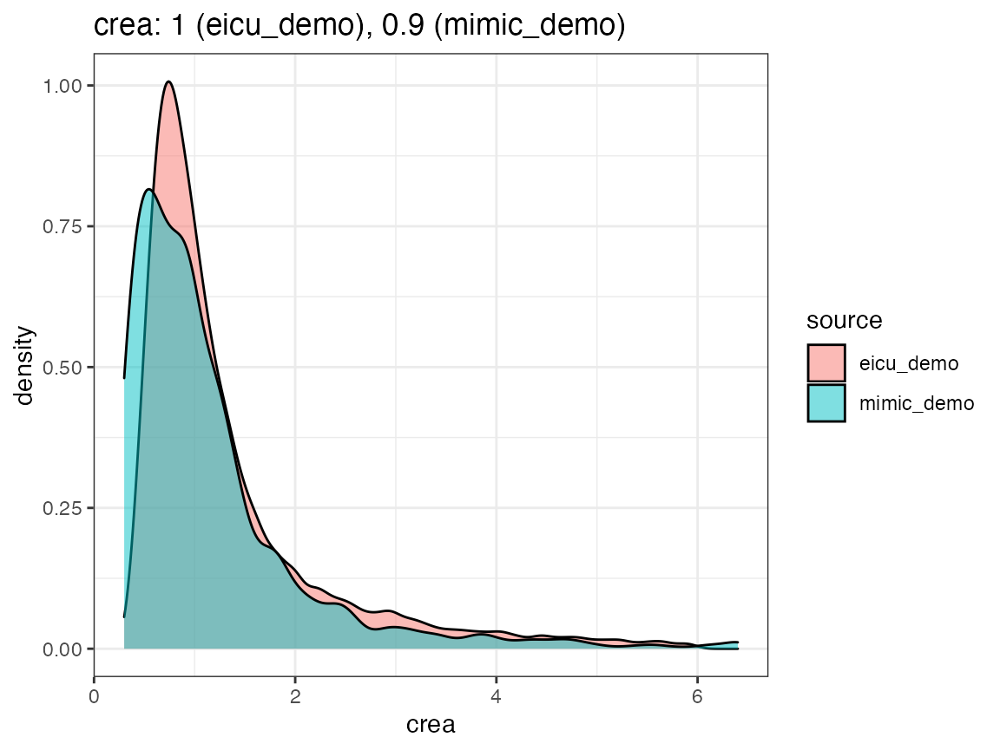

uom.RmdOne challenge when working with electronic healthcare (EHR) data from different hospitals, which is accentuated if the intensive care units (ICUs) collecting the data are located in different geographic regions, is the use of different measurement unit systems. In part, this can be attributed to the use of imperial units in English speaking countries (e.g. patient weight being reported in lbs instead of kg), but more subtle differences in practice are involved as well, such as reporting lab test results in mg/dL instead of the SI unit mmol/L. While discrepancies of the former type are easy to resolve, harmonization of different notions of concentration is slightly more involved due to the conversion factor being substance-specific.
ricu data conceptsData concepts of type num_cncpt can specify an expected units as character vector (where the string in position 1 is added as per-column attribute units). Due to the complexity involved, unit conversion to the specified target unit currently is not handled automatically1. Instead, item-specific callback functions are responsible for handling this, while unit mismatches are reported as messages during concept loading.
(dat <- load_concepts(c("lact", "map"), c("mimic_demo", "eicu_demo")))
#> ── Loading 2 concepts ──────────────────────────────────────────────────────────
#> • lact
#> ◯ removed 19 (0.74%) of rows due to out of range (or `NA`) entries
#> ◯ not all units are in [mmol/L]: mEq/L, mmole/L, MMOLL (0.62%, 0.08%,
#> and 0.51%)
#> • map
#> ◯ removed 1438014 (74.7%) of rows due to out of range (or `NA`)
#> entries
#> ◯ not all units are in [mmHg], [mm Hg]: NA (96.74%)
#> ────────────────────────────────────────────────────────────────────────────────
#> # A `ts_tbl`: 139,144 ✖ 5
#> # Id vars: `source`, `icustay_id`
#> # Units: `lact` [mmol/L], `map` [mmHg]
#> # Index var: `charttime` (1 hours)
#> source icustay_id charttime lact map
#> <chr> <int> <drtn> <dbl> <dbl>
#> 1 eicu_demo 141764 1 hours NA 112.
#> 2 eicu_demo 141764 2 hours NA 128
#> 3 eicu_demo 141764 3 hours NA 143
#> 4 eicu_demo 141764 4 hours NA 133
#> 5 eicu_demo 141764 5 hours NA 103
#> …
#> 139,140 mimic_demo 298685 314 hours NA 76
#> 139,141 mimic_demo 298685 315 hours NA 58
#> 139,142 mimic_demo 298685 316 hours NA 47
#> 139,143 mimic_demo 298685 317 hours NA 35
#> 139,144 mimic_demo 298685 318 hours NA 12
#> # … with 139,134 more rowsMessages raised during loading of lactate values, for example, indicate that 0.62% of retrieved values are specified in mEq/L instead of mmol/L (which requires an identity transformation for unit conversion), while the remaining discrepancies are false positives (both mmole/L and MMOLL can be assumed to mean mmol/L). For mean arterial bloop pressure values, the target unit is specified as mmHg (with the alternative spelling mm Hg being accepted as well), however, due to the data organization in eICU2, no explicit measurement units are specified for this variable, in turn causing the large percentage of missing unit values reported.
Several utility functions are exported from ricu for helping with creating callback functions that handle unit conversion. Data items corresponding to the bilirubin concept for the European datasets HiRID and AUMCdb, for example, have a callback entry specified as convert_unit(binary_op(``*``, 0.058467), "mg/dL"). This creates a callback functions which applies binary_op(``*``, 0.058467) to the column specified as val_var and replaces existing values in the column identified by unit_var with the value "mg/dl". In case the loaded data already is comprised of a mix of units, a regular expression passed as rgx can be specified, which will be used to identify the rows on which to operate. Finally, the function binary_op turns a binary function into an unary function by fixing the second operand.
As a sanity check to see whether measurement units (and data values in general) are aligned when compared across datasets, density plots may be employed.

When extending the ricu dictionary to both new data sources and new data concepts, it might be worthwhile to visually inspect the returned data in a fashion similar to the above in order to have a high-level confirmation that measurement units roughly agree.
Support for automatically handling this, using the units packages, is being considered, but so far has not been implemented↩︎
Both the vitalperiodic and vitalaperiodic tables in eICU are layed out in wide format (whereas most other tables are in long format), and therefore no unit columns are available. This also explains the substantial degree of missingness (in terms of values) reported, as such a wide data organization scheme coupled with differing measurement intervals per variable will inevitably lead to some degree of sparsity.↩︎